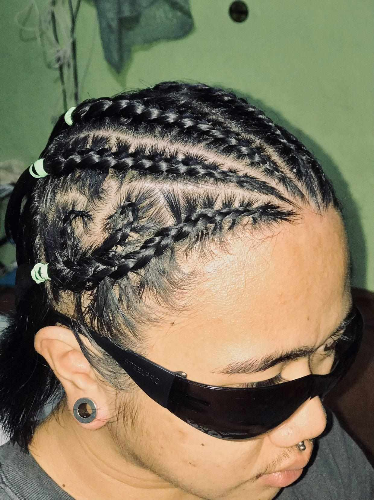

John Mark Reyes
Im from BSIT 1-6
My expectation from my final website or webpage this final semester is more functional,more useful and more interactive also I expect that my final website or webpage will be more better than my final website or webpage,and lastly I expect that i can use html to make a games,program,etc.
Here are my social media accounts so you can follow me